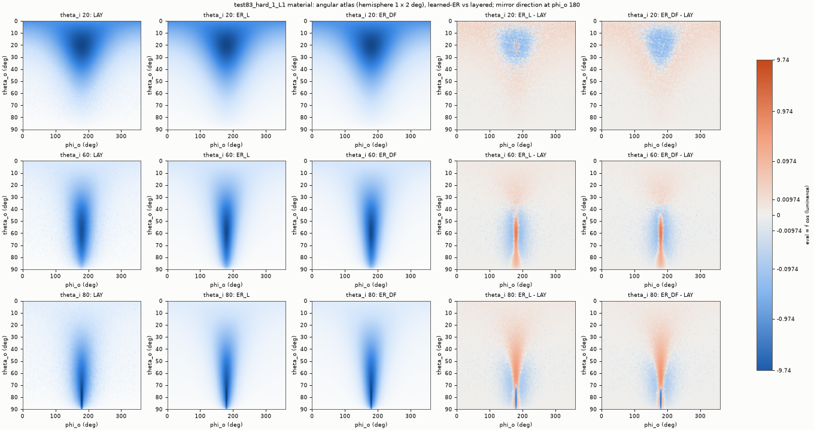
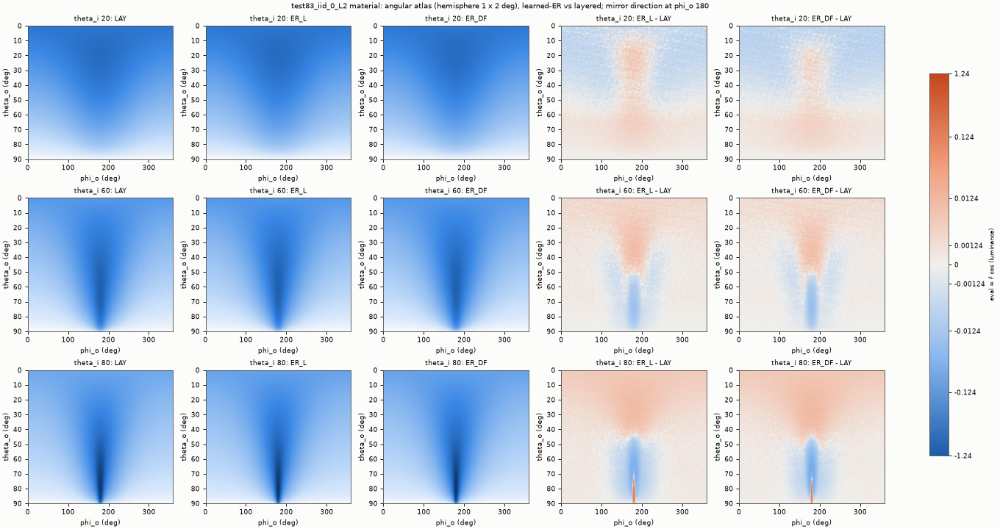
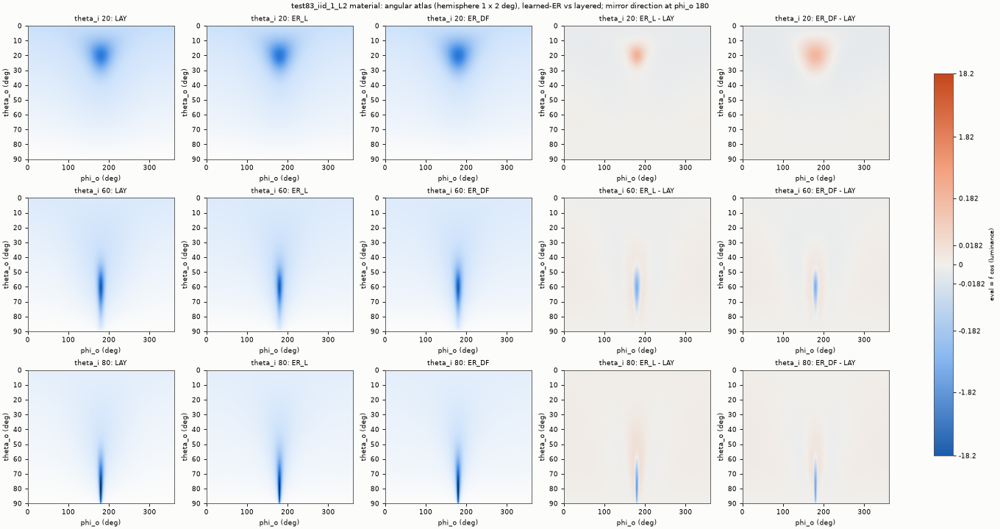
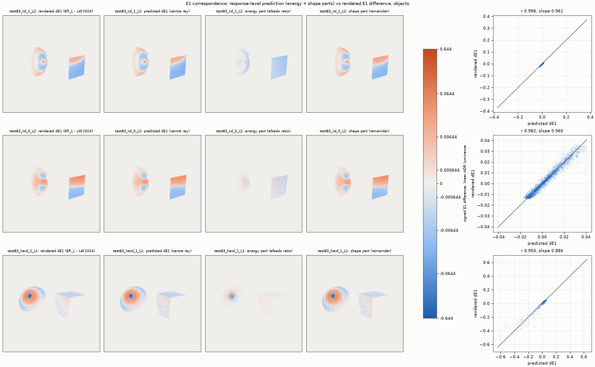
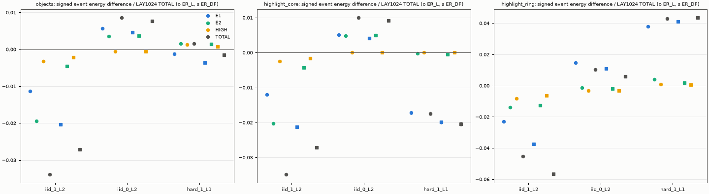
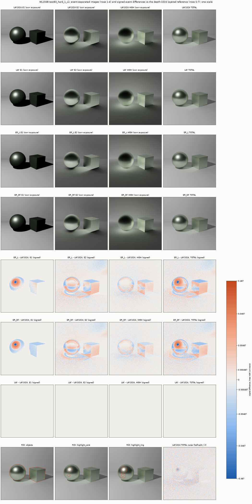
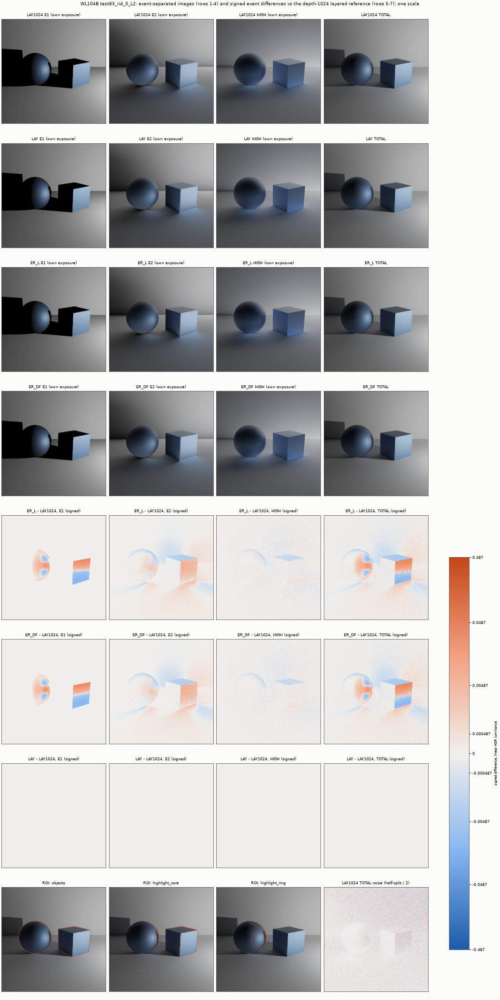
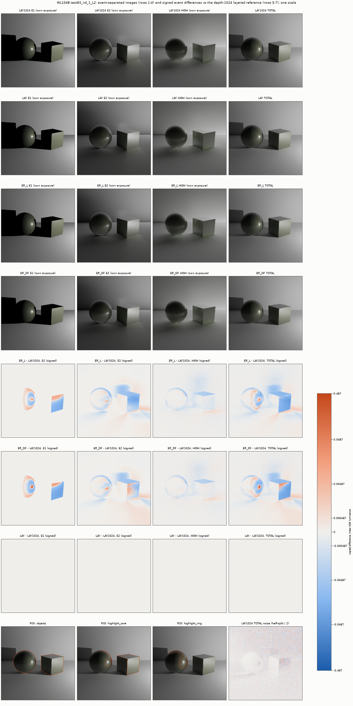
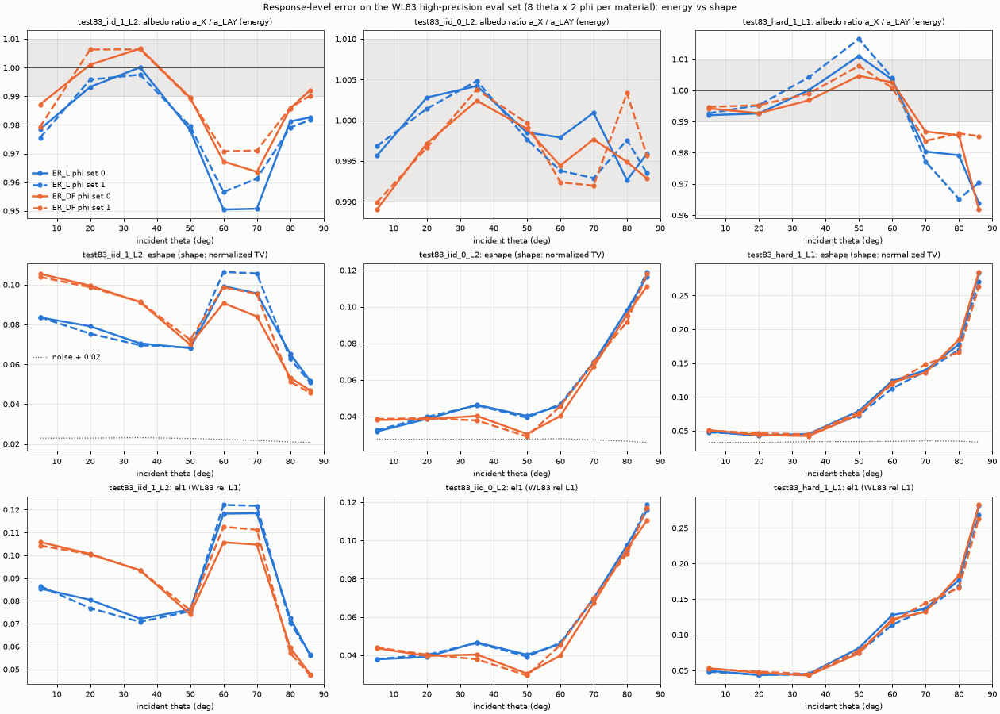

WL104B — Learned-ER material error attribution
Classification: REPRESENTATION_LIMITATION_SUPPORTED (qualified: frozen direct-fit procedure). Numbers: metrics.json.
atlas_test83_hard_1_L1.png

atlas_test83_iid_0_L2.png

atlas_test83_iid_1_L2.png

correspondence_E1.png

event_energy.png

events_test83_hard_1_L1.png

events_test83_iid_0_L2.png

events_test83_iid_1_L2.png

response_vs_theta.png
